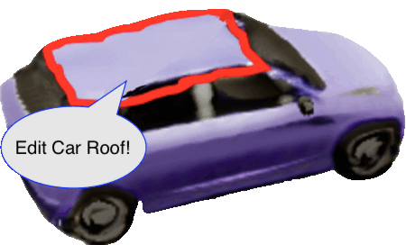

|
Hao-Yu (Max) Hsu I am an incoming Ph.D. student in computer science at the University of Illinois Urbana-Champaign, starting in Fall 2025. Prior to this, I obtained my M.S. degree from UIUC and my B.S. degree from National Tsing Hua University. I am fortunate to be advised by Prof. Shenlong Wang during my Master's study, and Prof. Yu-Chiang Frank Wang and Prof. Shao-Hua Sun at National Taiwan University during my undergrad. My research interests lie in 3D vision, neural rendering, and multimodal learning. My long-term goal is to develop AR/VR tools that model and reconsturct our physical world, and make realistic simulations accessible to everyone. Email / CV / Google Scholar / Github / Twitter |
{kind=link}
Selected Publications(* denotes equal contribution) |
|
|
PhysTwin: Physics-Informed Reconstruction and Simulation of Deformable Objects from Videos
Hanxiao Jiang, Hao-Yu Hsu, Kaifeng Zhang, Hsin-Ni Yu, Shenlong Wang, Yunzhu Li ArXiv, 2025 paper / project page / code We optimize a spring-mass physics model of deformable objects and integrate the model with 3D Gaussian Splatting for real-time re-simulation with rendering. |

|
AutoVFX: Physically Realistic Video Editing from Natural Language Instructions
Hao-Yu Hsu, Chih-Hao Lin, Albert J. Zhai, Hongchi Xia, Shenlong Wang 3DV, 2025 paper / project page / code A system that generates dynamic, physically realistic visual effects (VFX) on a single video solely from text-based editing instructions. |
 |
SPoVT: Semantic Prototype Variational Transformer for Dense Point Cloud Semantic Completion
Hao-Yu Hsu*, Sheng-Yu Huang*, Yu-Chiang Frank Wang NeurIPS, 2022 paper / project page / code / video A point cloud semantic completion framework to complete partial point clouds of 3D objects with variational Transformer. |
 |
NeurMiPs: Neural Mixture of Planar Experts for View Synthesis
Zhi-Hao Lin, Wei-Chiu Ma*, Hao-Yu Hsu*, Yu-Chiang Frank Wang, Shenlong Wang CVPR, 2022 paper / project page / code / video Use an efficient 3D planar representation to model the geometry and appearance of a scene for novel view synthesis. |
Other Publications |
|

|
Interpreting Latent Representation In Neural Radiance Fields for Manipulating Object Semantics
Yu-Shan Huang, Sheng-Yu Huang, Hao-Yu Hsu, Yu-Chiang Frank Wang ICIP, 2023 paper Developed a method for semantic-aware manipulation on generative NeRF by controlling latent representation. |
Education |
|
Ph.D. in Computer Science
University of Illinois at Urbana-Champaign
2025 - Present
|
|
|
M.S. in Computer Science
University of Illinois at Urbana-Champaign
2023 - 2025
Awarded Siebel Scholar, Class of 2025 [news link] |
|
|
B.S. in Electrical Engineering
National Tsing Hua University
2017 - 2021
Graduated with the highest honor, Rank: 1/102, GPA: 4.23/4.3 |
|
Experience |
|
|
|
|
Research Assistant
Robot Learning Lab, National Taiwan University
Jun. 2022 - Feb. 2023
Advisor: Prof. Shao-Hua Sun |
|
|
Research Assistant
Vision & Learning Lab, National Taiwan University
Sep. 2021 - Feb. 2023
Advisor: Prof. Yu-Chiang Frank Wang |
|
Teaching Experience |
|
Teaching Assistant
University of Illinois at Urbana-Champaign
CS233: Computer Architecture (Spring 2024) |
|
|
Teaching Assistant
National Tsing Hua University
EE2405: Embedded System Laboratory (Spring 2020) |
|
Awards & Professional Activity |
|
|
Credits to Jon Barron for this awesome website template. |